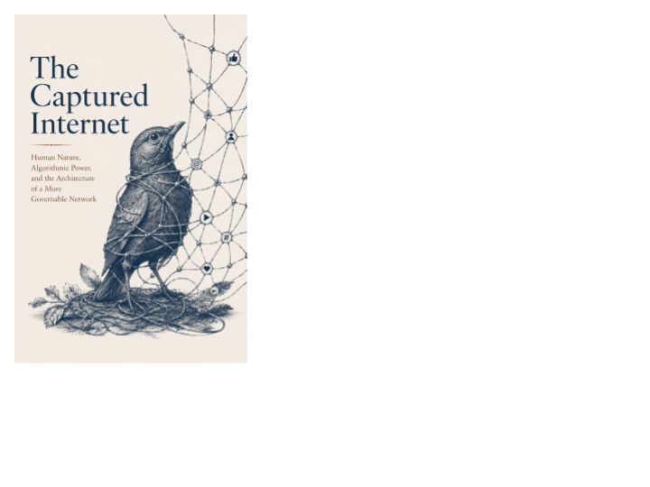

Technology · Axiologic Research Editions
The Captured Internet
Personal Data, Algorithmic Power, and the Coming Constitutional Crisis
Imagine an Internet that works flawlessly while becoming less worth entering: abundant synthetic content, invisible ranking, captive communities, and identities that cannot leave their providers. Trace how genuine conveniences became private constitutions, then consider what it would take to make digital power divided, replaceable, and answerable again.
Loading editions…
75 pagesLoading available editions…
When public life runs on private systems
The internet is no longer only a medium. It is an infrastructure of attention, identity and power. This book considers what constitutional safeguards become necessary when that infrastructure is captured.